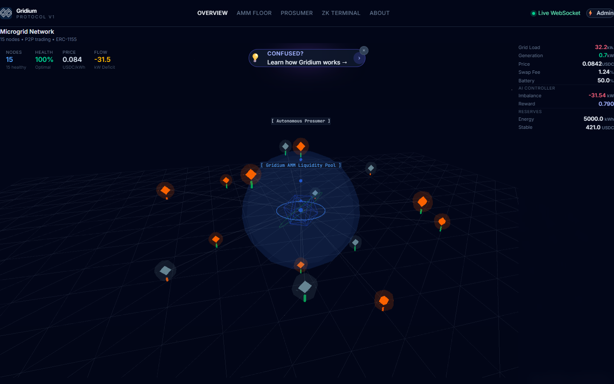
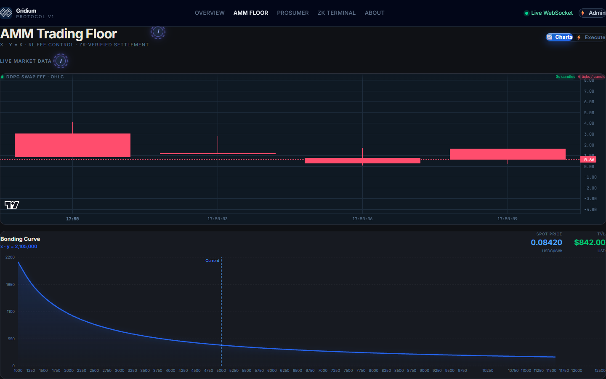

15-node microgrid
Solar yield, duck-curve demand, battery state, reserves, and injected disturbances produce the controller state.
Closed-loop microgrid systems prototype
Four runtimes connect a simulated neighborhood to a continuous-control agent, realtime command center, constant-product energy market, and proof-gated settlement experiment.
Gridium explores how physical state, market incentives, and privacy-preserving settlement could share one architecture. A Python environment simulates generation, demand, storage, and AMM reserves. A DDPG actor adjusts swap fees continuously. A gateway broadcasts state to a 3D operator interface while Solidity and Circom model the settlement boundary.
This is a systems prototype, not a grid-control product. Its technical value is the integration contract between simulation, control, realtime UX, and on-chain logic.
I implemented the FastAPI simulation loop, PyTorch DDPG actor-critic path, Node gateway integration, and React Three Fiber grid view. Yash Pandit led contracts and zero-knowledge work; Sanket Deka worked on frontend and UI/UX.
Each runtime has a narrow contract. That keeps high-frequency simulation, browser rendering, proof generation, and EVM state from becoming one fragile process.
Solar yield, duck-curve demand, battery state, reserves, and injected disturbances produce the controller state.
A seven-value observation maps to one bounded swap-fee action. Replay memory and soft target updates support continuous learning.
Energy and stable reserves follow the x × y = k invariant with fee accrual, slippage guards, and non-reentrant swaps.
The circuit exposes claimed surplus while keeping solar and load inputs private, then gates a contract path through a verifier.
[load, generation, imbalance, energy reserve, stable reserve, price, aggregate SoC]swap fee in [0.10%, 5.00%]balance - energy waste - price volatilityThe environment does not optimize price in isolation. Load, generation, imbalance, reserves, price, and battery state form a seven-dimensional observation.
The actor emits one normalized action and maps it into the permitted fee range. Continuous control avoids forcing the market into a handful of abrupt fee buckets.
actor(state) → sigmoid action → 0.001 + action × 0.049The critic estimates the value of a state-action pair. Replay memory breaks temporal correlation, Ornstein-Uhlenbeck noise supports exploration, and Polyak updates stabilize the target networks.
The Node gateway polls /tick every 500 ms and fans the state out through Socket.io. Zustand updates the UI while React Three Fiber renders energy flow and node behavior.


Bidirectional energy/stable swaps update reserves under a constant-product rule. Minimum-output parameters protect users from unacceptable slippage and nonReentrant guards transfer paths.
Only the RL_OPERATOR_ROLE can update the swap fee, and the contract clamps it between 10 and 500 basis points.
The Circom circuit proves amount_to_sell = total_solar - total_load without publishing the two private inputs. The AMM can call a Groth16 verifier before proof-gated liquidity.
The current circuit proves an arithmetic relationship; it does not prove sensor authenticity, location, meter ownership, or that the private inputs came from trusted hardware. Those require oracle and attestation design beyond this prototype.
| Subsystem | Source | Responsibility | Technical detail |
|---|---|---|---|
| Physics environment | ai-engine/aegis_env.py | State, disturbances, reward, action bounds | Gym-compatible seven-dimensional observation |
| DDPG agent | ai-engine/ddpg_agent.py | Actor, critic, replay, targets | Continuous one-dimensional action with OU exploration |
| Realtime engine | ai-engine/main.py | Tick loop and chaos endpoints | FastAPI state service and WebSocket endpoint |
| Gateway | backend/index.js | REST polling, Socket.io, proof endpoint | 500 ms fan-out with mock/event fallback paths |
| Market contract | AegisAMM.sol | Liquidity, swaps, fee control | AccessControl, ReentrancyGuard, slippage checks |
| Proof circuit | energy_proof.circom | Surplus relation | Two private signals and one public output |
| 3D interface | MicrogridCanvas.tsx | Node topology and energy flow | React Three Fiber driven by Zustand state |
Freeze deterministic scenarios, compare DDPG against PID and rule-based controllers, add contract invariants and circuit tests, then measure imbalance, volatility, proof latency, and recovery under the same disturbances.